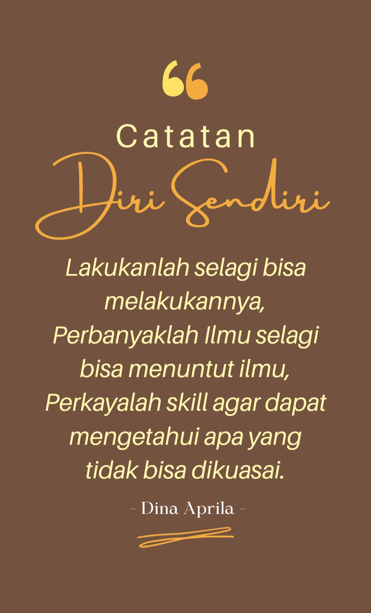

Indahnya Bersedekah.
Pada tanggal 24 Agustus 2018 hari Jum’at adalah hari yang berkesan buatku, aku belajar banyak dari seorang bapak supir angkot yang tak pernah lelah dan pantang menyerah. Beliau menginspirasiku bagaimana berjuang menghadapi dunia yang fana ini. aku takjub melihat beliau walaupun usianya sudah separuh baya, beliau tetap mencari nafkah untuk keluarganya.
Awal cerita kenapa aku terinspirasi dengannya yaitu ketika aku hendak pulang ke rumah dari Padang dengan kereta api. Pada saat itu kereta yang aku tumpangi dari Padang sudah sampai ke Pariaman. Seketika itu aku turun dan mencari angkot yang menuju ke rumah ku. Tak lama aku menunggu datang lah angkot yang aku cari yaitu angkot Marunggai. Lalu aku pun masuk, seketika aku di dalam angkot itu aku melihat-lihat keindahan pemandangan di perjalanan. Hari yang cerah dan angin yang sepoi-sepoi membuat hatiku menjadi tenang.
Tapi tak lama sesudah itu hari yang cerah berubah menjadi gelap seakan-akan seperti mau hujan yang disertai badai. Ternyata dugaan ku benar memang seperti itu yang terjadi saat pak supir mengisi bahan bakar di Pertamina Toboh. Hujan yang deras disertai badai membuat suasana menjadi dingin. Ketika ku lihat pak supir aku merasa kasihan, iba, dan sedih yang bercampur menjadi satu. Kaca pintu mobil angkot dekat pak supir itu tidak ada, ditambah lagi hari yang hujan deras dan disertai dengan badai membuat pak supir tadi menjadi basah dan kedinginan dan juga pak supir tersebut sepertinya lagi sakit karena disaat pak supir itu lagi mengendarai mobil yang dibawakan nya, pak supir itu batuk-batuk ditambah lagi flu.
Jujur aku merasa kasihan dan sedih sekali melihat bapak itu. Rintikan demi rintikan air hujan itu membasahi baju pak supir tadi dan ku lihat pak supir itu pun juga kedinginan. Memang cuaca saat itu tidak lagi bersahabat. Ya Allah jika ada alat yang dapat mengukur kesedihan hati ku mungkin tak dapat aku bayangi rasa kesedihan ku dikala itu. Entah kenapa aku menjadi kasihan dan ingin sekali membantu bapak itu.
Ketika satu persatu penumpang sudah sampai ditempat tujuannya, tinggal lah aku seorang diri didalam angkot bersama pak supir. Aku pun menghampiri bapak itu dan bertanya-tanya dengannya, “pak emang kaca pintunya ngak ada ya pak?” bapak pun menjawab “ngak ada nak” aku pun bertanya lagi “kan bapak jadi basah pak....” lalu bapak pun menjawab “iya nak, tapi mau gimana lagi”. dan aku pun bertanya lagi “ini mobil bapak ya pak?” bapak itu pun menjawab “iya nak” sontak aku pun menjadi merasa kasihan sekali dengan bapak itu, diusianya yang sudah ngak muda lagi bapak tadi tetap setia dan semangat mengantariku ke tujuan.
Dihati ku pun aku berdo’a untuk bapak itu, “Ya Allah, Murahkan lah rezeki bapak itu dan berikanlah beliau kesehatan agar beliau tetap bisa mencari nafkah untuk keluargannya. Ternyata begitulah peran sebagai orang tua, mereka rela melakukan apa saja agar bisa mencukupi kebutuhan keluarga. Seketika itu aku pun langsung teringat orang tuaku yang mana aku sering melawan perintah orang tua dan juga selalu menyusahkan orang tua. Di fikiran ku bagaimana caranya bisa menjadi orang yang berguna dan memberikan kebahagian untuk orang tuaku dimasa tuanya kelak pun selalu membayang-bayangiku.
Tak lama setelah itu ngak ke rasa aku hampir tiba dirumah. Melihat perjuangan bapak tadi aku pun ingin sekali membantu bapak itu untuk memperbaiki pintu mobilnya. Akhir nya aku pun sudah sampai di tempat tujuan. Aku pun memberi sedikit rezeki dari Allah yang merupakan uang beasiswa ku selama kuliah untuk bapak itu karena bapak itu sudah membuka pintu hati ku. Bapak itu pun terlihat terkejut saat aku berkata “pak, itu uang untuk bapak untuk memperbaiki mobil bapak agar tidak kehujanan” bapak itu pun kelihatan sangat senang dan menjawab “Alhamdulillah... makasih banyak ya nak” aku pun turun dan tersenyum melihat bapak itu bahagia dan bapak itu pun membalas senyuman ku itu.
Aku senang melihat bapak tadi bahagia dan aku berdo’a kepada Allah “Ya Allah semoga yang aku berikan itu berguna dan bermanfaat untuk bapak itu”. dan pada akhirnya aku bisa merasakan bahagia karena betapa indahnya bersedekah itu. Sesuatu yang kita beri kepada orang yang membutuhkan akan terasa manfaatnya dari pada kita harus menghambur-hamburkan uang untuk bersenang-senang, karena kita hidup di dunia hanya sementara sedangkan akhirat selamanya.
Setelah kejadian itu, tak disangka ternyata benar apa yang telah kita beri itu membawa manfaat. Jika kita memberi dengan ikhlas pasti Allah akan membalas apa yang kita perbuat, Allah akan melipat ganda kan Nikmat-Nya kepada kita. Jujur saja pada hari setelah aku bersedekah kepada pak supir itu, keluarga ku justru mengalami krisis moneter. Aku merasa kasihan melihat keluarga ku, karena pada hari itu orang tuaku mengalami kekurangan dalam material. ibuku malah meminjam uangku untuk belanja sembako, Untung saja aku masih mempunyai sedikit uang sisa dari beasiswa ku itu. Lalu aku pun memberikan uang ku kepada ibu.
Keesokan harinya merupakan hari dimana ibuku mengikuti kegiatan rutin tiap bulan yaitu Arisan. Jujur saja ibu ku dikala itu tidak mempunyai uang untuk membayar arisan. Ibuku pun meminjam uang ku lagi karena keadaan disaat itu memang lagi krisis. Aku pun memberikan uangku lagi kepada ibuku.
Siang hari pun berganti menjadi Malam, memang dikala itu arisan ibuku waktu nya adalah malam hari tepat setelah Isya. Sebelum arisan dimulai, ibuku pun menitipkan uangnya kepada nenekku, nenekku pun sebelumnya juga mengikuti arisan itu cuman nenekku sudah menerima arisan. Sebelum arisan itu dimulai, dikala aku memberikan uang ku kepada ibu ku, entah kenapa aku langsung bilang kepada ibuku bahwa ibuku lah yang menerima arisan hari ini. Aku terlalu percaya diri bilang itu kepada ibu ku. Ibu ku pun menjawab “kalau memang iya, syukur Alhamdulillah... kalau ngak pun juga gak papa. Kan ibu tetap aja menerima Arisan toh dalam 1 tahun setengah ini”.
Arisan pun dimulai, ini lah yang ditunggu-tunggu. Beberapa menit berlalu saatnya pengambilan nomor lot arisan ternyata ibuku lah yang menerima arisan. Senang bukan kepayang ibuku, akhirnya yang diharapkan ibuku itu terwujud juga. Aku pun senang mendengarnya. Tapi bukan itu saja, Nenekku pun juga menerima arisan yang lain karena saat itu nenekku pun juga ikut arisan di desa sebelah. Kami sekeluarga senang sekali mendengar hal itu. Dihari yang sama keluarga ku menerima dua arisan sekaligus.
Ya Allah sungguh tak disangka, Engkau-lah yang maha kaya. semua ini tentu sudah diatur oleh-Mu. Aku jujur tak menyangka hal ini akan terjadi, dikala keluarga ku mengalami krisis moneter. Benar kata orang, jika kita memberi dengan ikhlas dan setulus hati Allah akan melipat gandakan dari apa yang kita beri. Aku dulu tak pernah percaya akan hal itu karena menurut ku itu cuman hanya kebetulan saja. Tapi aku sekarang percaya akan hal itu, karena hal itu memang terjadi pada ku dan juga keluargaku saat ini. Dengan kita bersedekah kita bisa merasakan apa yang orang lain rasakan, karena dengan itu bisa membuat kita sadar dari kesenangan dunia selama ini. bahwa betapa indahnya bersedekah.
Author

Dina Aprila, S.Pd
Medan, 15 April 1999
"Sedekah tidak akan membuat kita rugi, justru akan membawa manfaat bagi kita. Ketika kita bersedekah pada orang lain ibarat kata jika kita memberi dengan tangan kanan, tangan kiri tak boleh tahu. Jadi begitu lah kehidupan tak perlu orang lain tau ataupun berapa banyak nilai yang kita sedekahkan. Karena Sedekah itu hendaklah dari niat hati yang ikhlas dan tulus tanpa pamrih."
.png)
.png)
.png)

.png)